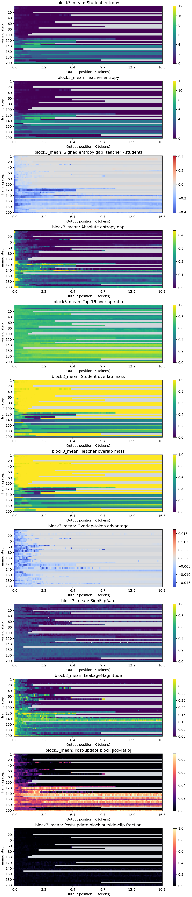

滑动窗口 v2 范围修订：仅 seed21 的 random3 / sliding3（2026-09-11）
状态：范围已收窄，等待实现验收与门禁；本节没有新增实验结果，也不作有效性结论。本节覆盖下方保留的 v1 四方法、三 seed 方案中冲突的范围、预算和统计规则；其他历史结果不变。本轮仅可访问 ml2，绝不连接、复制自或依赖 train；报告其他位置的历史机器信息不是本轮授权。
| 执行顺序 / 方法 | 本轮固定设置 | 正式预算 |
|---|---|---|
| 1. random3 | training seed21；每个 optimizer step 共享一个均匀随机偏移 0/1/2 | 200 steps；6,400 条训练 rollout |
| 2. sliding3 | training seed21；三个偏移的完整 PPO loss 平均后一次 backward/update | 200 steps；6,400 条训练 rollout |
完成后停止：只执行这两个 run 及各自全部 Step50/100/200 评测，然后停止并报告。不论 seed21 得分方向如何，均不自动继续 seeds22/23，不增加 fresh fixed3/token 对照，不换 seed 取代低分结果；扩大范围须另行明确授权。
启动授权与目录：用户已授权实现验收与门禁通过后启动上述两次正式训练及规定评测；当前仍为待验收状态，不表示门禁已通过或训练已启动。正式目录为 $ROOT/runs/20260911v2r1_sliding_window_seed21_ml2/{variant}，小型恢复门禁单独使用 $ROOT/runs/20260911v2r1_sliding_window_probe_seed21_ml2/{variant}；此 probe 目录不代表启动完整 Stage A。首次 v2 门禁在 Ray 初始化时因 socket 路径过长退出，未进入模型训练；保留失败日志，v2r1 仅缩短缓存路径，训练数值配置不变。
模型与训练不变：Qwen3-1.7B-Base 学生 / Qwen3-4B-Base-GRPO 教师；DAPO-Math-17K raw 1,791,700 行池；两组独立从相同 Base 权重出发，使用相同 seed21 prompt schedule。每步 4 prompt x 8 rollout、LR=2e-6、max response=16,384，其余 PPO、长度、采样、四卡与 offload 设置继承 v1；每步保存 prompt batch hash。random3 的独立 PCG64 offset seed=910021，恢复时核对 RNG 和下一次抽样位置。
保留门禁、推迟高成本探针：保留 unit loss/gradient identity、mask/边界/clipping 回归，以及两方法在真实指定师生模型上 Step1 保存、退出、恢复至 Step2 的小型 resume gate；门禁开销单列，正式训练重新从 Base 开始。冻结 full Stage A 的 1,024 条 rollout 和每 25 步三偏移的完整参数额外反向传播均推迟以节省算力，不作为本轮前置条件，也不标记为已通过。
恢复保证边界：门禁核对模型、optimizer、scheduler/global step、数据身份/sampler 位置、offset 状态与下一次抽样，以及所有 rank 的 torch RNG。上游不保存 vLLM 引擎内部 sampling stream，因此不承诺精确恢复该采样流，也不宣称恢复后的生成 rollout 与不中断运行逐位一致。
监控不取消：每步保留训练 loss、普通训练裁剪前 grad norm、长度/截断、clipping、non-finite 与耗时；Step1 及每 5 步保留师生 entropy/gap、Top-16 overlap 与相关信用分配统计。保留 128-token bins 的 step x position 热图、position-mod-3、bin 样本数和共享色标，低覆盖标缺失；窗口覆盖与 clipped-token 比例按窗口定义记录。
轻量 per-phase 诊断：每 5 步（Step5/10/.../200）在 CPU 上复用同一已缓存的完整训练 batch，使用更新前 old = current 的 detached log-prob/mask 输入，输出各 phase loss 与输入导数 norm、cosine/dispersion 的 loss_input_* 标量摘要；这不是更新后 clipping 测量。未定义 cosine 在 JSON 中用 0 占位并保存有效性/有效计数，聚合只用有效项，禁止 NaN/Infinity，不能把占位 0 当成正交。这是 loss 输入导数，不是完整参数梯度；不穿过模型额外反向、不增加模型/教师前向或 rollout、不改变 RNG/训练状态，不能据此声称参数梯度 D_phase 或方差下降；普通训练 grad norm 主监控不变。
完整评测与保留：两个 run 的 Step50/100/200 全量评测 MATH500=500、AIME24=30、AIME25=30、AMC23=83，共 643 题，每题 n=8、eval seeds21-28；temperature=1.0、top-p=0.9、max response=16,384、thinking 关闭。主 grader 保持 historical_utils_sha04f7.py 及原 SHA-256，内置 grader 仅作敏感性视图。完整保留所有 Step50/100/200 checkpoint 与失败产物，不删除、不自动裁剪。
主分析改为本轮探索性 sliding3 - random3：Step200 的等权任务 macro Avg@8 / Pass@8，按 (task, example_id, rollout_id, eval_seed) 完整配对。seed21 单独做 10,000 次 task-stratified paired prompt bootstrap（bootstrap seed=20260911，95% 区间），整题保留八个回答，只反映固定 seed/checkpoint 下的题目不确定性。training seed 的 n=1，不计算 seed 级 tCI 或 SD，不沿用 v1 的三 seed 强支持判据；Step50/100 和分任务结果保持探索性，不替换主终点。
历史结果仅作背景：旧 fixed3/token 不是本轮 fresh paired comparison，不进入当前 paired bootstrap，不可拼为训练重复，也不能据此宣称新方法优于旧基线。历史 Base eval 仅在 manifest 与 resolved eval config 完全一致（权重/tokenizer、数据/题目、解码、数量/seeds、grader）时复用；身份未知或不匹配则不复用。不得自动启动 Base eval，需另行授权并单列成本。
预算：2 run x 200 = 400 formal steps；400 x 4 x 8 = 12,800 条 nominal training rollout；2 x 3 x 643 x 8 = 30,864 条 checkpoint eval rollout。full Stage A 本轮为 0；新增 Base eval 本轮为 0，若另行授权则额外 5,144 条，评测总数才变为 36,008。resume gate、失败重试及诊断耗时单列，不能混入正式预算。
协议：v2 seed21 范围修订；当前配置摘要（非可执行 Hydra 配置）；原始 v1 设计（保留）。当前范围与恢复保证以上述修订为准；无新增实验结果。
原始 v1 设计归档：滑动窗口的边界稳健性验证（2026-09-11）
以下保留原始设计与当时状态；不是本轮执行授权。当前范围、诊断预算、统计规则与配置以上方 v2 seed21 修订为准。
假设：固定 block3 会因分块起点切断部分短期依赖；对三个偏移的完整 PPO loss 取平均，可能减轻边界依赖并改善性能。数学恒等式、梯度差异和最终准确率分别验证，不能把恒等式直接当成有效性证据。
| 方法 | 定义 | 比较目的 |
|---|---|---|
| sampled-token OPD | k=1 | 原始基线 |
| fixed3 | 原 block3_mean，偏移固定为 0 | 主比较对象 |
| random3 | 每个 optimizer step 随机选择偏移 0/1/2 | 观察边界随机化本身的作用 |
| sliding3 | 三个偏移的完整 loss 平均，只做一次 optimizer step | 验证完整偏移平均的作用 |
阶段 A：Base 与历史 token Step100 两个冻结锚点，各用 64 个训练池 prompt、每题 8 条 rollout；四种方法共享同批 token，测梯度恒等式、偏移差异、cosine 和分块位置效应。
阶段 B：仅在 ml2，Qwen3-1.7B-Base 学生 / Qwen3-4B-Base-GRPO 教师，DAPO raw 1,791,700 行池；四方法分别跑 training seed 21/22/23，共 12 run。每组 200 steps、每步 4 prompt x 8 rollout、LR 2e-6、最大响应 16,384；micro-batch 1/1/4、vLLM 0.6。
完整评测：每组 Step50/100/200 的 MATH500/AIME24/AIME25/AMC23，每题 n=8，eval seed 21-28。主比较为 Step200 的 sliding3 - fixed3，报告三个 training seed 的逐项差值、均值、标准差与 seed 级区间；题目 bootstrap 单列。
状态：仅完成设计；未实现滑动窗口代码，未启动新训练。ml2 数据与历史 grader 的哈希已重新匹配；旧实验只作参照，正式对照会重跑。完整方案见 预注册实验方案，参数摘要见 配置摘要（非可执行 Hydra 配置）。
最终跨师生验证结论（2026-07-13）
结论：Block3 mean 是模型对相关的有效改动，不是已经跨师生稳定成立的通用 OPD 改进。
Qwen3-1.7B / Qwen3-4B-GRPO 上得到强单 seed 支持；换成官方 DeepSeek-R1-Distill-Qwen-1.5B / JustRL-DeepSeek-1.5B 后，Step 200 的 Avg@8 置信区间跨 0，Pass@8 点估计为负，按预注册标准判定为未复现。
| 严格配对师生 | Step 200 Avg@8 delta | Avg 95% CI | Step 200 Pass@8 delta | Pass 95% CI | 判定 |
|---|---|---|---|---|---|
| Qwen3-1.7B-Base ← Qwen3-4B-Base-GRPO | +0.0514 |
[+0.0353, +0.0680] |
+0.0584 |
[+0.0141, +0.1039] |
强单 seed 支持 |
| DeepSeek-R1-Distill-Qwen-1.5B ← JustRL-DeepSeek-1.5B | +0.0158 |
[-0.0031, +0.0356] |
-0.0015 |
[-0.0345, +0.0323] |
未复现 |
实验合同
- DAPO-Math-17K raw 1,791,700-row pool；训练 SHA-256
cf359f...959cf。 - seed 21；200 steps；每步 4 prompt × 8 rollout；LR
2e-6；最大响应 16,384。 - 每个训练步的 prompt batch hash 在 token 与 Block3 间全部匹配，共 41 个诊断节点。
- Math500/AIME24/AIME25/AMC23；每题 n=8，seed 21-28；三个 checkpoint 共 15,432 rollout/方法。
- 固定历史 grader SHA
04f7a0...f9490d7f；10,000 次 task-stratified paired prompt bootstrap。
机制与成本
- DeepSeek/JustRL 的 Block3 在 Step 200 仍有 sign flip
25.5%、weighted sign flip11.3%、normalized leakage1.035；token baseline 均为 0。 - 两条训练都没有 NaN/Inf 或 ratio overflow，终点 entropy、grad norm 与 overlap 接近，因此失败不是数值崩塌。
- 完整 200 步耗时：token
18,951s，Block318,767s，仅快0.97%。 - 当前实现仍对整条学生 rollout 做 teacher forward，再聚合连续 token 的 advantage 和 policy ratio；它不是更少 teacher 打分次数的计算优化。


详细审计报告：Qwen3 同机严格配对；DeepSeek / JustRL 跨师生复现。两份目录都包含比较 JSON、训练诊断图和最终 hash manifest，不包含 raw rollout、日志或 checkpoint。
Idea 定义
现有 OPD 通常是逐 token 监督：学生生成一个 token，teacher 就评价这个 token 比旧学生更应该被鼓励还是压低。你的想法是把连续几个 token 合成一个小片段，让 teacher 评价整个片段。
y1, y2, y3, y4，就分别评价 y1、y2、y3、y4 四个 token。[y1, y2] 和 [y3, y4] 两个连续 block，teacher 一次评价一个 block。log p_teacher(y1) + log p_teacher(y2 | y1)。这就是 teacher 认为连续片段 [y1, y2] 有多合理。log p_old(y1) + log p_old(y2 | y1)。teacher_block_score - old_block_score。如果为正，说明 teacher 比旧学生更喜欢这个连续片段；如果为负，就说明 teacher 更不喜欢。[y1, y2]，不枚举所有可能的 2-token 或 3-token 组合。
上一轮 pilot 结论
部分成立。 block-3 在 GSM8K 和 MATH500 上都略高于 token OPD，说明 block-level 信号不是无效方向。
但稳定性不干净。 block-2 和 block-3 的 pre-clip grad norm 明显更高，block-3 的 max grad norm 达到 1136。
当前论文级复现实验设置
你的要求是“其他论文用哪个模型，我们也和人家用一样的模型”。当前设置已按 Qwen3 math OPD 论文线修正：external/revisiting_opd 只作为代码底座，不决定模型选择。
| 来源 | Student | Teacher | 本实验采用方式 |
|---|---|---|---|
| Rethinking OPD | Qwen3-1.7B-Base |
Qwen3-4B-Base-GRPO 等 Qwen3-4B teachers；GRPO teacher 来自论文作者发布 checkpoint |
采用同家族 Qwen3-1.7B student + Qwen3-4B-GRPO teacher |
| Blockwise Policy-Drift Gating | Qwen3-1.7B-Base |
Qwen3-4B-Base-GRPO，同上，paper GRPO checkpoint |
主对齐对象；我们的 block3_mean 与标准 sampled-token OPD 在同配置下比较 |
| Revisiting OPD | Qwen2.5-7B-Instruct |
OpenThinker3-7B |
只复用其公开 codebase；不把这组模型作为本轮 DAPO-Math-17K 主实验模型 |
| Student | /mnt/data/cpfs/Yaleon/opd_train_qwen3_1p7b_base_to_4b_grpo_20260605/models/Qwen3-1.7B-Base |
| Teacher | /mnt/data/cpfs/Yaleon/opd_train_qwen3_1p7b_base_to_4b_grpo_20260605/models/Qwen3-4B-Base-GRPO，论文作者发布的 GRPO teacher，不是 Qwen 官方原始 checkpoint |
| Train data | /mnt/data/cpfs/Yaleon/opd/data/math_opd_dapo17k_hf_full_eval4/train.parquet，1,791,700 row-pool entries；对齐 Blockwise Policy-Drift Gating 的训练表口径 |
| Train SHA256 | cf359f257a320aecb6448e824b7cc34f70e694583be3df7177b14f359b7959cf |
| Eval data | /mnt/data/cpfs/Yaleon/opd/data/math_opd_dapo17k_hf_full_eval4/test.parquet，643 rows = MATH500 500 + AIME24 30 + AIME25 30 + AMC23 83 |
| Eval SHA256 | c5c9f1b3f65eb40053cae14c005c39e29443d04acbbabba873e98d64818a9680 |
| Resume gate | /mnt/data/cpfs/Yaleon/opd/runs/20260708_block3_dapo17k/resume_gate_qwen3_full |
| 结果 | 从 global_step_1 成功恢复，保存 global_step_2；model / optimizer / extra_state 均为 4 rank 完整 checkpoint。 |
| 当前 run root | 已完成基线：/mnt/data/cpfs/Yaleon/opd/runs/20260708_block3_dapo17k_paper_qwen3已完成 block5： /mnt/data/cpfs/Yaleon/opd/runs/20260709_block5_dapo17k_paper_qwen3已完成 block10： /limx_embap/tos/user/Yaleon/opd_block_experiments_20260709/opd/runs/20260709_block10_dapo17k_paper_qwen3 |
| 当前进度 | token_opd、block3_mean、block5_mean、block10_mean 均已保存 global_step_200 完整 checkpoint，并完成四任务 n=8 full eval。block5 首次正式 run 在 step 42 触发 vLLM CUDA OOM，失败目录已归档为 block5_mean_failure_attempt_20260709_205712_oom_step42；重启时保持目标、模型、数据、seed 和训练步数不变，仅把 vLLM 后端显存阈值降为 0.6。block10 第一次尝试因 ml2 venv 的 numpy/OpenBLAS 残缺失败，已归档为 block10_mean_failure_attempt_20260709_131921_numpy_openblas；修复环境后的正式 run 于 2026-07-10 03:22 UTC 完成。block10 的 0 分来自模型生成崩塌，原始输出与训练指标均已复核，不是 grader 误判。 |
| 正式训练组 | token_opd vs block3_mean vs block5_mean vs block10_mean，同 seed、同数据、同模型、同训练步数；block5/block10 额外记录运行后端显存阈值 gpu_memory_utilization=0.6。 |
| 正式 eval | MATH500、AIME24、AIME25、AMC23；四组均使用 step 200、n=8、temperature=1.0、top_p=0.9、max_tokens=16384，完整评测均已结束。 |
正式 full eval 结果
四组都使用 step 200 checkpoint；四个 benchmark 均使用 n=8、temperature=1.0、top_p=0.9、max_tokens=16384。结果呈现清晰的非单调关系：block3_mean 略优于 token 基线，block5_mean 回退，block10_mean 则发生完全生成崩塌。
| 方法 | 状态 | Macro avg@8 | Macro pass@8 | MATH500 avg/pass | AIME24 avg/pass | AIME25 avg/pass | AMC23 avg/pass |
|---|---|---|---|---|---|---|---|
token_opd |
完成 | 0.3147 |
0.4865 |
0.6913 / 0.8860 |
0.1333 / 0.2667 |
0.0667 / 0.1667 |
0.3675 / 0.6265 |
block3_mean |
完成 | 0.3188 |
0.5148 |
0.6928 / 0.8780 |
0.0958 / 0.3000 |
0.0875 / 0.2667 |
0.3991 / 0.6145 |
block5_mean |
完成 | 0.2967 |
0.4809 |
0.6740 / 0.8760 |
0.0917 / 0.2000 |
0.0792 / 0.2333 |
0.3419 / 0.6145 |
block10_mean |
完成（崩塌） | 0.0000 |
0.0000 |
0.0000 / 0.0000 |
0.0000 / 0.0000 |
0.0000 / 0.0000 |
0.0000 / 0.0000 |
| Δ block3-token | 差值 | +0.0041 |
+0.0283 |
+0.0015 / -0.0080 |
-0.0375 / +0.0333 |
+0.0208 / +0.1000 |
+0.0316 / -0.0120 |
| Δ block5-token | 差值 | -0.0180 |
-0.0055 |
-0.0173 / -0.0100 |
-0.0417 / -0.0667 |
+0.0125 / +0.0667 |
-0.0256 / -0.0120 |
| Δ block10-token | 差值 | -0.3147 |
-0.4865 |
-0.6913 / -0.8860 |
-0.1333 / -0.2667 |
-0.0667 / -0.1667 |
-0.3675 / -0.6265 |
+0.0041、macro pass@8 +0.0283，但并非所有单项都提升。
| 任务 | token 长度 / 格式错 | block3 长度 / 格式错 | block5 长度 / 格式错 | block10 长度 / 格式错 |
|---|---|---|---|---|
| MATH500 | 2528.8 / 175 | 2385.7 / 117 | 2478.7 / 131 | 12978.8 / 4000 |
| AIME24 | 6848.7 / 44 | 6450.1 / 42 | 6976.4 / 46 | 12632.9 / 240 |
| AIME25 | 6213.9 / 34 | 5459.8 / 21 | 6137.7 / 30 | 12739.3 / 240 |
| AMC23 | 4863.7 / 62 | 4434.7 / 54 | 5169.2 / 74 | 12996.3 / 664 |
| 格式错合计 | 315 / 5144 | 234 / 5144 | 281 / 5144 | 5144 / 5144 |
block10 崩塌的训练证据
| 训练 step | actor entropy | 平均回复长度 | 长度截断率 | episode reward mean |
|---|---|---|---|---|
50 | 0.702 | 4302.5 | 0.156 | 0.062 |
60 | 6.837 | 7446.4 | 0.312 | 0.000 |
70 | 7.872 | 13728.2 | 0.625 | 0.000 |
100 | 9.854 | 13118.9 | 0.625 | 0.000 |
170 | 5.142 | 16384.0 | 1.000 | 0.000 |
200 | 7.222 | 15048.2 | 0.875 | 0.000 |
0.264、平均长度为 4297.2、reward mean 为 0.125。step-200 原始样本已确认是长篇多语种随机碎片，因此 0 分不是答案抽取器造成的。
k=10，仍应在同一机器上复跑并增加 2–3 个 seed。tokenizer regex warning 在四组相同评测口径中均出现，作为共同 caveat 记录。
数学公式：token 监督 vs block 监督
下面用可视化公式展示两者的差别。蓝色项是标准逐 token OPD 已经有的部分；橙色项是 block-level 额外引入的交叉项。
设一个 block 是 [y1, y2]，并定义两个 token 的 advantage：
− A2 log πθ(y2 | y1)
上一轮 clean-room pilot 完整 Regrade 结果
| Variant | GSM8K primary | Δ vs token | MATH500 primary | Δ vs token | Grad norm mean | Grad norm max | Supervision units/step |
|---|---|---|---|---|---|---|---|
| token OPD | 0.4594 | 0.0000 | 0.200 | 0.000 | 112.68 | 246 | 127.50 |
| block-2 | 0.4541 | -0.0053 | 0.194 | -0.006 | 265.95 | 1008 | 63.59 |
| block-3 | 0.4685 | +0.0091 | 0.202 | +0.002 | 473.84 | 1136 | 41.61 |
GSM8K
MATH500
梯度风险
上一轮 clean-room pilot 训练数据
| 训练文件 | /mnt/data/cpfs/Yaleon/opd_cleanroom_20260707/data/public_math/train_prompts.jsonl |
| 训练样本数 | 3400 条 prompt。三组使用同一数据文件、同一 seed=7、同一 Python RNG prompt schedule，因此每一步抽到的 prompt ID 序列相同；但 OPD 是 on-policy，学生生成的 completion 会在不同 loss 更新后逐步分叉，所以 rollout 文本不保证相同。 |
| 来源分布 | openai/gsm8k train 2000 条；EleutherAI/hendrycks_math 7 个子类各 200 条：algebra、counting_and_probability、geometry、intermediate_algebra、number_theory、prealgebra、precalculus。 |
| Prompt 模板 | 原题后追加：Please reason step by step, and put your final answer within \boxed{}. |
| Data manifest | /mnt/data/cpfs/Yaleon/opd_cleanroom_20260707/data/public_math/manifest.json，记录 sources、counts 和 math_train_status=ok。 |
上一轮 clean-room pilot 训练过程参数
| Student | 官方 Qwen/Qwen3-0.6B，本地路径 models/official/Qwen__Qwen3-0.6B |
| Teacher | 官方 Qwen/Qwen3-4B，本地路径 models/official/Qwen__Qwen3-4B |
| 三组变量 | --opd-block-size=1、2、3；其他训练参数保持一致。 |
| Rollout | prompts_per_step=2，max_prompt_tokens=1024，max_new_tokens=128，temperature=0.7，top_p=0.95。 |
| OPD 设置 | variant=standard，top_k=20，token_supervision_stride=1，token_supervision_offset=0。 |
| 优化设置 | 50 steps / variant，lr=5e-7，weight_decay=0，grad_clip=1.0，seed=7，enable_thinking=false。 |
| Checkpoint | save_steps=50，final checkpoint 保存完整模型、tokenizer 和 training_state.pt。 |
上一轮 clean-room pilot Eval 配置
| Eval checkpoint | 每组使用自己的 checkpoint-step-00050：token_opd、block_k2、block_k3。 |
| GSM8K | /mnt/data/cpfs/Yaleon/opd_cleanroom_20260707/data/public_math/eval_gsm8k.jsonl，1319 条，limit=0 表示完整评测。 |
| MATH500 | /mnt/data/cpfs/Yaleon/opd_cleanroom_20260707/data/public_math/eval_math500.jsonl，500 条，limit=0 表示完整评测。 |
| 生成参数 | n=1，batch_size=8，max_prompt_tokens=1024，max_new_tokens=256，temperature=0.7，top_p=0.95，seed=7，enable_thinking=false。 |
| Online grader | 生成时保存 *_summary.json，使用 simple boxed/exact normalizer；这是在线粗评，不作为最终主分数。 |
| Final regrade | 完整生成后运行 scripts/regrade_predictions.py。GSM8K 主分数使用 numeric boxed-or-last；MATH500 主分数使用 strict/boxed exact，并在数字答案场景补充 numeric match。 |
| 输出文件 | 每组保存 gsm8k_preds.jsonl、math500_preds.jsonl、gsm8k_regrade_summary.json、math500_regrade_summary.json。 |
| Run root | /mnt/data/cpfs/Yaleon/opd_cleanroom_20260707/runs/block_opd_effect_20260708_124329 |
实现确认
下一轮实验：控制 block advantage 的尺度和归因泄漏
上一轮 naive block aggregation 说明 block-3 有轻微收益，但梯度范数明显放大。下一轮不再只问“block 是否有效”，而是验证：能否保留 block 片段级信号，同时降低梯度放大和 credit assignment leakage。
λ=0.5。如果 mean 或 mixed 在 GSM8K/MATH500 接近或超过 naive block-3，同时 grad norm 显著低于 naive block-3，就说明真正有价值的方向是 variance-controlled / credit-preserving block OPD，而不是简单的固定 k 聚合。
下一轮实验结果：mean block-3 成立，mixed 需要再调
本轮已在 train 跑完完整三组对照。Run root：/mnt/data/cpfs/Yaleon/opd_cleanroom_20260707/runs/block_advantage_20260708_144223。三组均完成 50 steps 训练、GSM8K 1319 条完整生成、MATH500 500 条完整生成和 regrade。
| 方案 | block advantage | grad norm mean | grad norm max | GSM8K | MATH500 | 判断 |
|---|---|---|---|---|---|---|
| naive block-3 | AB = A1 + A2 + A3 | 466.74 | 1136.00 | 0.4655 | 0.192 | 对照组，梯度放大明显 |
| mean block-3 | AB = (A1 + A2 + A3) / 3 | 165.22 (-64.6%) | 504.00 (-55.6%) | 0.4693 (+0.38pp) | 0.198 (+0.60pp) | 成立：降梯度且质量不降 |
| mixed block-3, λ=0.5 | Amix,i = 0.5Ai + 0.5 mean(A1, A2, A3) | 83.29 (-82.2%) | 175.00 (-84.6%) | 0.4708 (+0.53pp) | 0.188 (-0.40pp) | 梯度最好，但 MATH500 下降；λ 需要 sweep |
sum / k 已经把 naive block 的梯度放大压下来，并且在两个 eval 上都略优于 naive block-3。
sum / sqrt(k)、advantage clipping、以及 λ ∈ {0.2, 0.8} 的 mixed sweep。
论文级 Baseline 设计
当前实验主要是内部 ablation：token OPD、naive block、mean block、mixed block 都在同一 trainer、同一官方 student/teacher、同一数据和 seed 下比较。这可以证明 block objective 内部哪个设计更合理，但如果要写论文，还需要和社区认可的方法对齐。
| Baseline | 作用 | 与本 idea 的关系 | 优先级 |
|---|---|---|---|
| Base model | 官方 Qwen3-0.6B 不训练 | 证明后训练本身带来增益 | 必须 |
| SFT / off-policy KD | teacher 生成解答，student 做监督微调 | 证明 on-policy/block OPD 不是被简单 SFT 打败 | 必须 |
| Standard sampled-token OPD | 每个位置只用 student 实际采样 token 的 log-ratio 监督 | 这是本方法直接改造的对象；可按 GKD / MiniLLM / Rethinking OPD 的定义实现 | 必须 |
| Student-TopK OPD | 在 student top-k token 上做 OPD，而不是只看 sampled token | 回答“同一 prefix 上看更多 vocab token 是否更好”；与我们的“沿时间看多个 token”互补 | 必须 |
| Teacher-TopK / Local Support Matching | 在 teacher 支持集上做 truncated reverse-KL，并配合 top-p rollout / special-token masking | 来自 Revisiting OPD，是当前很强的稳定性 baseline | 强烈建议 |
| FiRe-OPD | trajectory-level filter + token-level soft reweighting | 和我们同属“重新分配 OPD supervision granularity / weight”的路线 | 建议 |
| TOPD | 用 near-future trajectory 判断真实分叉，并把 guidance 分配到未来多个 token | 动机非常接近：都认为 isolated token-level correction 不够 | 建议 |
| Blockwise Policy-Drift Gating | 把 old-current student logprob shift 按 block 聚合，mean-normalized 后作为 loss gate | 名字和机制都最接近“block + weight”，但它不改 teacher block logprob，只做 blockwise reweighting | 相关工作必须讨论 |
Base + SFT/KD + sampled-token OPD + Student-TopK OPD + Teacher-TopK/LSM + naive block + mean block。其中 naive block 是内部 ablation，不是外部方法 baseline。
与 Blockwise Policy-Drift Gating 的关系
这是目前最接近我们的相关工作，必须重点对比。它同样使用 block 粒度、mean-normalized weighting，并试图缓解 token-level OPD 的局部噪声。但它和我们的核心信号来源不同，因此不是同一个方法。
| 维度 | Blockwise Policy-Drift Gating | 我们的 mean block OPD |
|---|---|---|
| block 信号来源 | old student 与 current student 在 sampled path 上的 logprob drift | teacher 与 old student 的 teacher-derived advantage |
| 是否改变 teacher supervision | 不改变 teacher target，只给原有 token OPD loss 乘 gate | 改变监督单位，把连续 token 的 teacher-vs-old advantage 聚合成 block signal |
| block 的作用 | blockwise reweighting / gating | block-level reverse-KL / block advantage aggregation |
| teacher 是否参与 block signal | 不参与；gate 是 student-only drift controller | 直接参与；block advantage 来自 teacher logprob 与 old student logprob |
| 本质问题 | 哪些 token loss 在 rollout reuse 时更 stale / 更该被重加权 | 连续几个 token 是否应该共享一个 teacher-derived supervision signal |
| 能否组合 | 可以组合：policy-drift gate 可以作为外层权重，乘在 mean block OPD 的 loss 上。 | |
这次实验说明了什么
支持该 idea 的证据
block-3 在两个任务上都略高于 token OPD：GSM8K 从 0.4594 到 0.4685，MATH500 从 0.200 到 0.202。虽然提升很小，但方向一致。
block supervision unit 明显减少，但性能没有崩，说明连续 token 的联合 logprob 信号可以承载有效监督。
反对或需要修正的证据
block-2 在两个任务上都略低于 token OPD，说明 block 化不是单调收益。
block-2/3 的 grad norm 明显放大，说明简单求和会改变 loss 尺度，可能需要按 block length 归一化、温度缩放或 advantage clipping。
sum / k、sum / sqrt(k)、block advantage clipping，以及与原 token OPD 的 mixed objective。